Київ — це місто з понад тисячолітньою історією, де прадавній дух Святої Софії та Києво-Печерської лаври гармонійно співіснує з енергією сучасного мегаполіса. воно заворожує зеленими пагорбами, величним Дніпром, затишними вуличками Подолу та незламним духом своїх жителів. Це серце України, яке надихає своєю красою, силою та особливою атмосферою в будь-яку пору року.
Визначні пам'ятки Києва вражають поєднанням давньоруської спадщини, барокової архітектури та монументального модернізму.
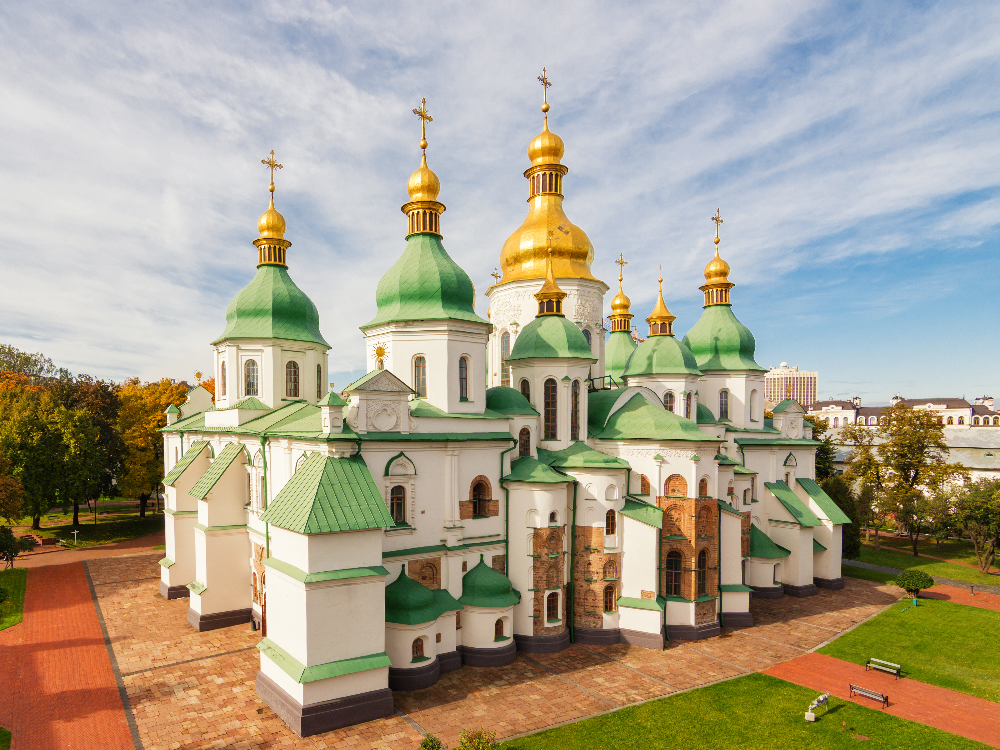
Софійський собор — унікальна пам'ятка XI століття зі збереженими автентичними мозаїками та фресками часів Ярослава Мудрого, занесена до Спадщини ЮНЕСКО.
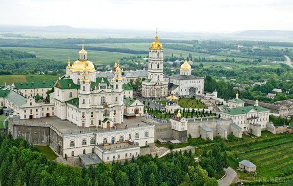
Києво-Печерська лавра — один із найстаріших і найважливіших православних монастирських комплексів Східної Європи з печерами, величними дзвіницями та храмами.
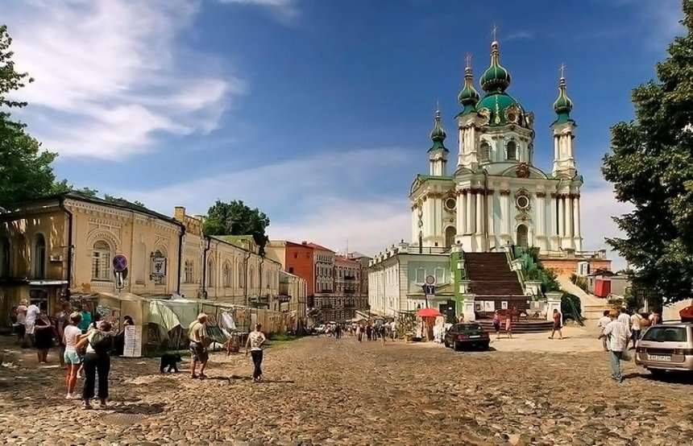
Андріївський узвіз та Андріївська церква — колоритна вулиця-музей під відкритим небом, що з'єднує Верхнє місто з Подолом, прикрашена витонченою бароковою церквою за проєктом Растреллі.
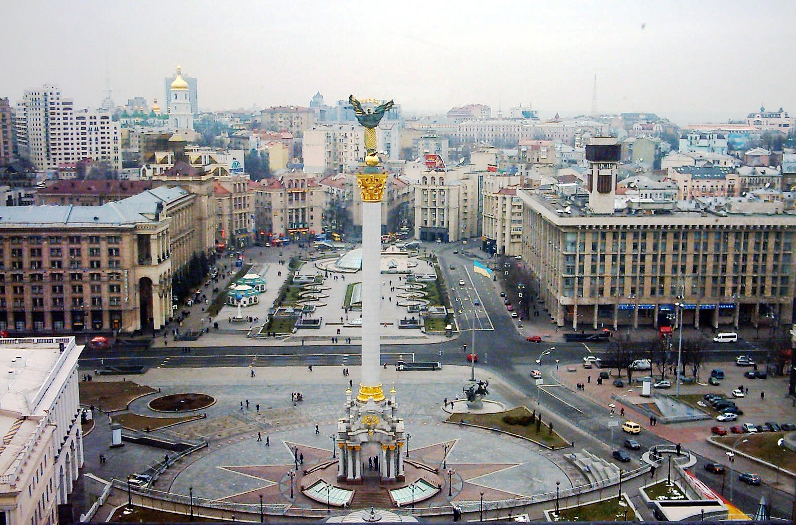
Майдан Незалежності та Хрещатик — головна площа та центральна вулиця столиці, серце суспільного й політичного життя країни.
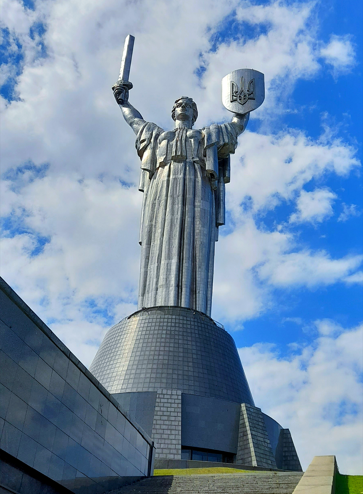
Монумент «Батьківщина-Мати» та парк Слави — грандіозна 102-метрова скульптура із щитом (із зображенням Тризуба), що піднімається над Дніпром і є частиною Музею історії України у Другій світовій війні.
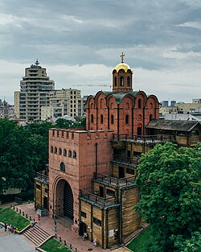
Золоті ворота — фортечна вежа з проїздом, що слугувала головним парадним входом до стародавнього Києва.
Кухня та гастрономія Києва — це гармонійне поєднання багатовікових традицій династії Київської Русі, класичної столичної кулінарії та сучасного європейського гастрономічного авангарду.
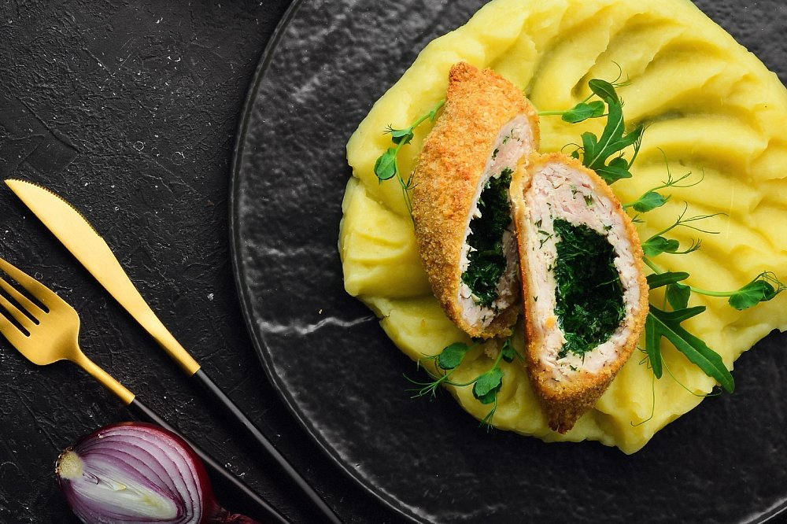
Котлета по-київськи — світловідома візитівка столиці: ніжне куряче філе в хрусткій паніровці з ароматним вершковим маслом і зеленню всередині, яке витікає при першому розрізі.
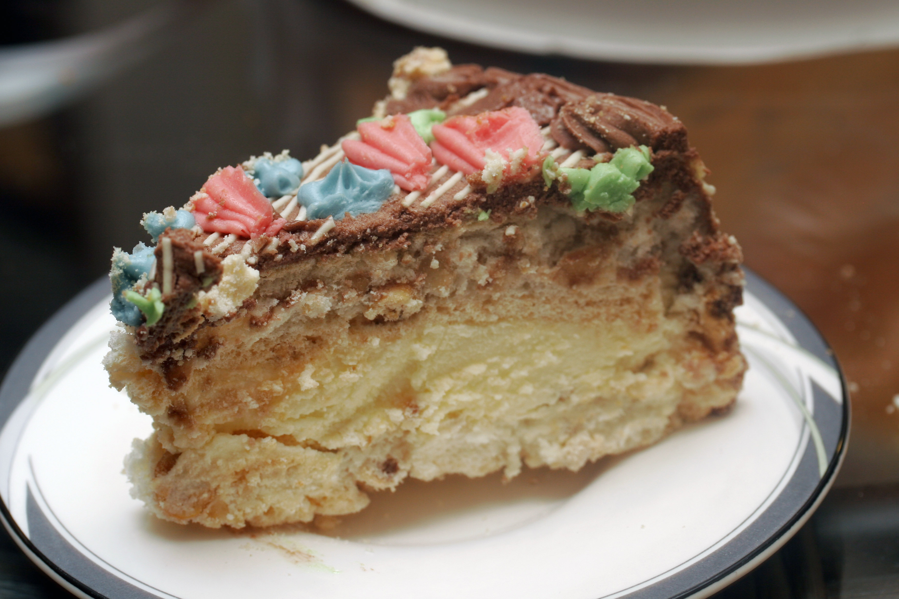
Київський торт — легендарний десерт із повітряно-горіхових коржів безе з фундуком та ніжним масляним кремом, створений на фабриці імені Karl Marx (нині Roshen) ще в середині XX століття.
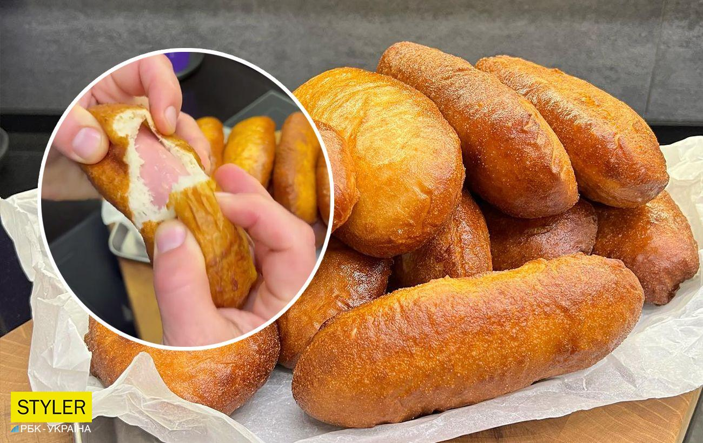
Київська перепічка — культовий вуличний фастфуд, що продається у віконці на вулиці Богдана Хмельницького ще з 1981 року: гаряча сосиска в духмяному дріжджовому тісті, за якою завжди стоїть черга.
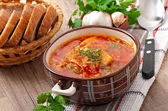
Український борщ по-київськи — багатий, наваристий борщ, який за столичними рецептами нерідко готують на кількох видах м'яса (яловичина, свинина, качка) з додаванням мочених яблук, квасолі та подають із часниковими пампушками.
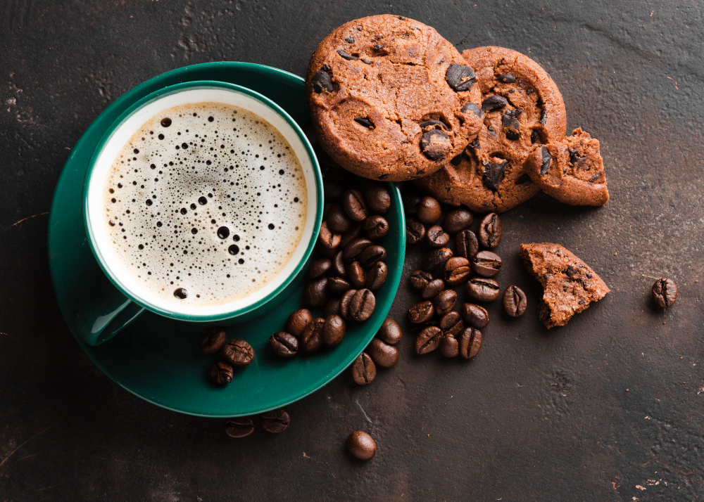
Сучасна гастрономічна сцена — Київ вважається столицею крафтової кави та новаторських ресторанів: від стильних кав'ярень третьої хвилі й нео-бістро до ресторанів сучасної української кухні, де давні рецепти переосмислюють на новий лад.
Культура та традиції Києва — це гармонійний сплав багатовікової спадщини давньої Русі, козацької доби та динамічного сучасного життя. Столиця славиться своїми духовно-релігійними святкуваннями на свята Різдва й Великодня навколо давніх храмів, пишним цвітінням каштанів навесні, що стало неофіційним символом міста, а також традицією гуляти мальовничим Подолом та Андріївським узвозом. Крім того, сучасний Київ сформував особливу культуру кав'ярень, вуличних мистецьких фестивалів і незламного міського міцного духу, який об'єднує покоління киян.
Культура та традиції Києва — це гармонійний сплав багатовікової спадщини давньої Русі, козацької доби та динамічного сучасного життя. Столиця славиться своїми духовно-релігійними святкуваннями на свята Різдва й Великодня навколо давніх храмів, пишним цвітінням каштанів навесні, що стало неофіційним символом міста, а також традицією гуляти мальовничим Подолом та Андріївським узвозом. Крім того, сучасний Київ сформував особливу культуру кав'ярень, вуличних мистецьких фестивалів і незламного міського міцного духу, який об'єднує покоління киян.